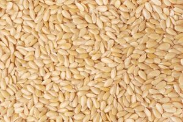

ⲟⲕⲉ, ⲁⲕⲉ (Z 627 same ?) S nn m, sesame: P 44 83 ⲥⲓⲛⲁⲙⲓⲛ · ⲥⲓⲁⲙⲟⲥ · ⲥⲓⲥⲁⲙⲓⲟⲩ (σησάμιον) ⲟ. سمسم = 43 59 ⲥⲓⲛⲁⲙⲟⲥ · ⲟ. ﺳﹶ, CR '87 376 alternative to ⲃⲁⲗ ⲛⲁⲃⲱⲕ in recipe, Z 629 leaves of ⲟ.

ⲁⲕⲉ A v ⲟⲕⲉ.
ⲟⲕⲉ, ⲁⲕⲉ (Z 627 same ?) S nn m, sesame: P 44 83 ⲥⲓⲛⲁⲙⲓⲛ · ⲥⲓⲁⲙⲟⲥ · ⲥⲓⲥⲁⲙⲓⲟⲩ (σησάμιον) ⲟ. سمسم = 43 59 ⲥⲓⲛⲁⲙⲟⲥ · ⲟ. ﺳﹶ, CR '87 376 alternative to ⲃⲁⲗ ⲛⲁⲃⲱⲕ in recipe, Z 629 leaves of ⲟ.
| view | ⲥⲓⲙⲥⲓⲙ, ⲥⲙⲥⲓⲙ, ⲥⲙⲥⲙ, ⲥⲉⲙⲥⲏⲙ S | (noun masculine) sesame1428 |